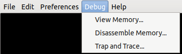
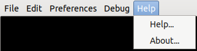

Home
Buttons
File
Select AppleII Model...
Opens a dialog with 'radio button' options to select Apple II models ranging from the original to the enhanced IIe
There is also a button to permit selecting an external ROM image file. This menu item is disabled when the machine
is powered on.
Print to File
Displays the two options below
Print Text...
Opens a file dialog to save text to a file on the host computer. Text will be directed to the file after a
PR#1 command is issued.
Print a PDF...
Opens a file dialog to save dot-matrix style graphics to a PDF file.
(See Printing for important info about the "Close Print" button)
Exit
Immediately exits the ApplePi program.
Edit
Copy Screen Text to Clipboard
Copy all text on screen to the clipboard.
Paste Text to Keyboard
If the clipboard contains text, it will be entered to the keyboard.
Preferences
Use Mixed-Case Keyboard
Use this to toggle between an upper-case-only and mixed-case keyboard.
(When this is selected, the menu item will change to: "Use Uppercase-only
Keyboard").
Echo Screen Text to Console
If ApplePi has been run from the command line (i.e. from a terminal window),
text output to the ApplePi screen, as well as anything entered from the keyboard,
will be echoed to the terminal window. (When this is selected, the menu item
will change to: "Stop Echo to Console").
Echo Screen Text to File...
Use this to echo screen text to a disk file, in the same way as echo to console.
Menu item text will also change, as in echo to screen.

Note: When using any debug dialog, all text fields require the
'Enter' key before the value will be used.
View Memory...
Use this to view RAM, ROM, or the state of the Apple II "soft switches". Both
main or auxiliary RAM may be viewed. Currently, data can be neither copied
nor edited.
Disassemble Memory...
If ApplePi has been run from the command line (i.e. from a terminal window), use
this to disassemble RAM or ROM to the terminal. Both main or auxiliary RAM may
be disassembled.
Trap and Trace...
Use this to trap (halt execution) of a machine-language program, or to trace
its execution between two addresses. (Doing either makes sense ony if ApplePi
is being run from a terminal window). Up to four traps may set; these addresses
are remembered after ApplePi is shut down, but are not active unless the trap-and-
trace window is shown. The history of up to 100,000 of the instructions executed
before the trap may be dumped.
Execution of 65C02 machine instructions may be traced between two any two
addresses. No distnction between tracing instructions in ROM or RAM. Trace is
started and stopped by the 'Start Trace' button. Two check boxes, 'Trace SS fetches'
and 'Trace SS stores' may be used to print the address of execution and name of
"soft switches" as they are read and written.

Help...
Brings up the pages you are looking at now. :)
About...
Displays a GPL (General Public License) statement, copyright notice, and a brief
list of what operating systems ApplePi runs on.
Help Buttons